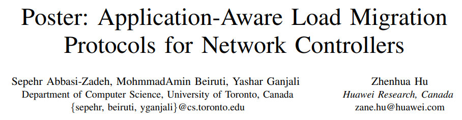
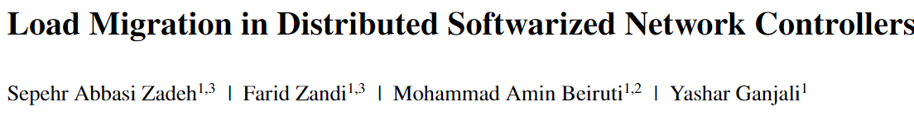
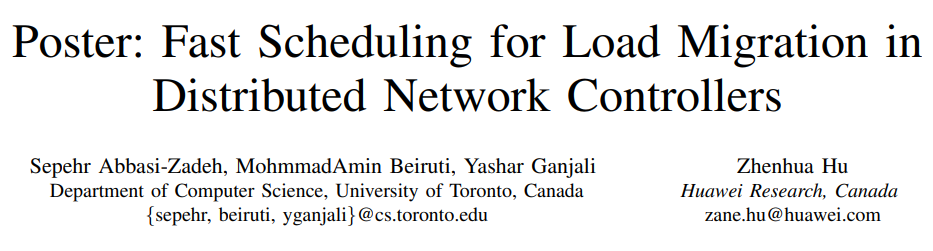
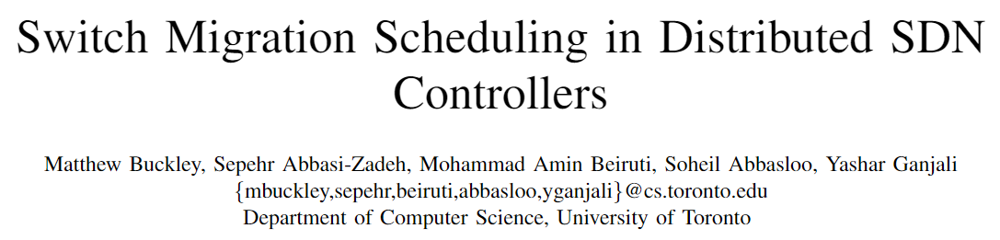
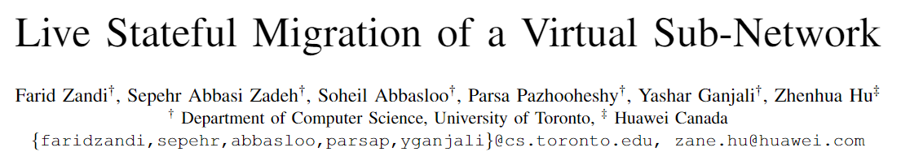
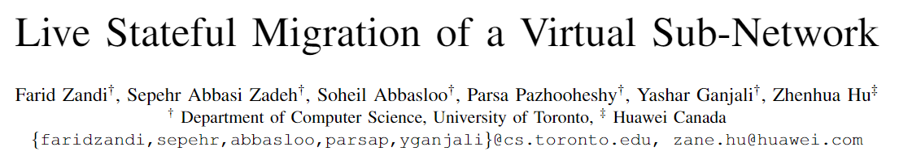

Data Center Networks: Migration & Transportation
Sepehr Abbasi Zadeh
Summer 2023 - EPFL
Summer 2023 - EPFL

University of Toronto

Huawei Canada
Data Center Networks
- Extreme increasing demand for computing
- Cloud computing
- AI/ML models
- LLM/Transformers [1]
Network Challenges
- Management at Scale
- Migration
- Overlay Networks
- Congestion
- First-RTT Dilemma [2]
Migration
- Protocol enhancement
- Batch scheduling
- Cut the tail latency
- Migrate a sub-network
Transport
- Scout: A novel congestion signal
- A Scout-Based Congestion Control
- Augmenting TCP/IP Stack via eBPF
MIGRATION
Load Migration
Reasons
- Change in the demand
- SW/HW maintenance
- Isolation and Monitoring
- Disaster prevention
Granularities
- Control Path
- Controller load migration
- Data Path
- VM/Container
- Application
- Tenant
- Any virtual sub-network
Migration
Reasons
- Change in the demand
- SW/HW maintenance
- Isolation and Monitoring
- Disaster prevention
Granularities
- Control Path
- Controller load migration
- Data Path
- VM/Container
- Application
- Tenant
- Any virtual sub-network
Load Migration
From 4-Phase to 3-Phase protocols




Batch Scheduling



Load Migration
Meta-Migration


Live Stateful Sub-Network Migration

 

TRANSPORTATION
Congestion Control (CC)
- Applications demand network bandwidth
- Overshooting results in drop
- Underutilization increases FCT
- The sending rate should be adjusted
- End hosts make these decisions based on signals
Congestion signals
Scout
- We periodically send small probe packets
- These packets are sent with lower priority than data


DCN Scout-Based Congestion Control

Implementation Challenges
- Following operations are complicated under Linux TCP stack
- High frequency packet generation
- IP Priority marking per packet
- Maintenance at scale: Kernel code should not be touched!
- Transparency: Application-layer sockets should remain intact
- Short-RTT DCN: User-level applications have high context switching overhead
eBPF for Scout
Receiver-side:
- eBPF TC layer reflects the Scout (ACK)
Sender-side:
- eBPF TC layer periodically clones packets from connections
- Demotes the cloned packet's priority
- Mark the packet as Scout* and send it over wire
- On each Scout ACK, updates the RTT of Scouts in an eBPF maps
- Finally, eBPF cong-ops layer reuses map states
DCN Scout-Based Results


Augmenting TCP/IP Stack
TCP/IP Stack Limitations
- Lack of complete network observability
- Per flow CC
- Not flexible enough
- Per socket manipulation
- Per path manipulation
- Lack of per-packet manipulation interface
- Less clarity regarding the rule enforcement delay
Augmenter
Key Idea
unify the management and control of underlying flows
- Gather states
- Aggregate those
- Control existing and incoming flows
Augmenter for setting IW
- Initial Window (IW) defines the initial sending rate
- Collect the congestion window (cwnd) values of the flows as they finish
- Aggregate based on the path
- Take a per path average and use that for IW of the path
Leveraging eBPF for Augmenter
Kernel-Level State Binding
- Binding per path
- Binding per layers
User-Level State Analyzer
- Floating point calculations
- Longer control loops
Other uses and limitations
Binding per path
- Aggregate congestion signals (e.g., ECN)
Binding per layers
- Per packet control level (e.g. TOS priority marking)
- Merge some functionalities of Network and Transport layers (e.g. Scout)
- Cooperation between the application and network layer (e.g. run consensus [3])
Limitations
- Memory access pattern
- Packet steering between the CPUs and NIC's rxqs
References
- NVIDIA Hopper Architecture In-Depth
- Hu, Shuihai, et al. "Aeolus: A building block for proactive transport in datacenters." Proceedings of the Annual conference of the ACM Special Interest Group on Data Communication on the applications, technologies, architectures, and protocols for computer communication. 2020.
- Zhou, Yang, et al. "Electrode: Accelerating Distributed Protocols with {eBPF}." 20th USENIX Symposium on Networked Systems Design and Implementation (NSDI 23). 2023.
Q&A